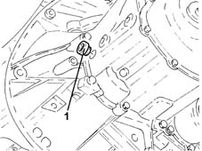
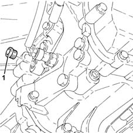

0010T41 MANUAL GEARBOX OIL - Check level and top up, if necessary
- Path
- Procedures > 00 MAINTENANCE > 0010 NEW UNITS AND PLANNED MAINTENANCE'. > 0010T vehicle oil and fluids > 0010T41 MANUAL GEARBOX OIL - Check level and top up, if necessary
- Kind
- repair procedure (removal / refitting; the operation number is the code)
- Applies to
- all engines; all production periods
- Interactive page
- https://sloeber94.github.io/elrnDB-lYpsln/en/#/2428827
Applies to: engines: 1.2 8v, 1.2 16v, 1.4 16v; all production periods
Place the car on a lift.
1. Undo the gearbox casing filler plug.

Applies to: engines: 1.3 JTD; all production periods
Place the car on a lift.
Proceed with removal .
1. Undo the gearbox casing filler plug.

Applies to: engines: 1.2 8v, 1.2 16v, 1.4 16v; all production periods
Check the fluid in the gearbox is level with the filler plug hole. if not, top up with the recommended fluid.
 | Type | Component | Name | Qty. |
|---|---|---|---|---|
- | Oli [l] | MANUAL GEARBOX | TUTELA CAR ZC 75 SYNTH | - |
Clean the drain plug, refit and tighten to the recommended torque.
 | Fastening | Component | Ø | Value (daNm) |
|---|---|---|---|---|
- | Filler plug | GEAR CASING PADS | M22 | (Differential side) 2.3 ÷ 2.8 |
Remove the vehicle from the lift.
Applies to: engines: 1.3 JTD; all production periods
Check the fluid in the gearbox is level with the filler plug hole. if not, top up with the recommended fluid.
| Type | Component | Name | Qty. |
|---|---|---|---|---|
- | Oli [l] | MANUAL GEARBOX | TUTELA CAR ZC 75 Synth | 1.98 |
Clean the drain plug, refit and tighten to the recommended torque.
| Fastening | Component | Ø | Value (daNm) |
|---|---|---|---|---|
- | Filler plug | GEAR CASING PADS | M22 | (Differential side) 2.0 ÷ 3.0 |
Proceed with refitting .
Remove the vehicle from the lift.
Topics that link to this page (16)
- 0010K80 80,000km service coupon - emission control versions
- 0010M60 160,000km service coupon - emission control versions
- 1020A20 crank case oil sump - r + r clean seals for sealant application
- 1020D26 flywheel side oil seal cover - r+r
- 1024B10 engine flywheel - r + r for versions with manual gearbox
- 1810A20 clutch - r + r
- 2110A10 manual gearbox and differential - r + r
- 2110A60 manual gearbox/engine coupling bracket - r+r
- 2110C30 gearbox rear cover - r + r.
- 2110D52 l/h flange on differential - r + r with drive shaft removed
- 2110D53 left hand flange on differential - r+r
- 2110D61 right differential oil seal - r r with drive shaft removed
- 2110D63 rh differential shaft oil seal - r r
- 2110D74 differential l/h inner drive shaft - r + r
- 2110D76 Differential right INNER DRIVESHAFT - R.R.
- 2710A40 l/h or r/h drive shaft (one) - r + r